Chi tiết 2.2
Follow theo Orderflow (không cản tàu). Mỗi điều kiện ở trang chính: hiểu thế nào và nhìn trên chart ra sao.
Tổng: khi nào được vào lệnh
Bối cảnh đúng + giá ở mốc gần + ít nhất 2 dấu hiệu order flow cùng phe + nến xác nhận đã đóng + đủ 2R.
Không bao giờ vào lệnh chỉ vì một dấu hiệu đơn lẻ. Có hai thế:
- Thế A — giá đang trong range: chỉ vào ở hai cạnh, nhắm cạnh đối diện.
- Thế B — giá đã phá range và giữ được: chỉ đánh theo hướng phá, vào ở nhịp hồi về mốc. Không đánh ngược một cú đẩy đang có lực: đó là “không cản tàu”.
Hai câu gốc của CORVEN cho 2.2: để ý momentum (lực của nhịp đẩy: nến dài, delta to, đi một mạch) và giá không được test quá sâu (nhịp hồi không được xuyên qua mốc, xem “Nhịp test không quá sâu”).
Từ cần biết
- M1, M15
- Chart nến 1 phút, 15 phút.
- SL, TP
- Mức dừng lỗ, mức chốt lời.
- R
- Khoảng từ điểm vào tới SL. 2R = mục tiêu xa gấp đôi khoảng đó.
- Limit
- Lệnh đứng chờ sẵn ở một giá. Market = lệnh khớp ngay.
- Range
- Đoạn giá đi ngang, chạy qua lại giữa hai cạnh.
- Phá range
- Nến đóng ngoài cạnh. Râu chọc ra rồi đóng lại bên trong thì chưa phá.
- Phá thật
- Đã phá, và 1–2 nến sau vẫn đóng ngoài cạnh, không quay vào.
- Fail break
- Nến đóng ngoài cạnh, rồi nến sau đóng lại vào trong: cú phá thất bại.
- Cấu trúc
- Đỉnh và đáy gần nhất. Nến đóng qua chúng là gãy cấu trúc.
- Mốc
- Chỗ giá có lý do phản ứng: cạnh range, stacked imbalance mới, đỉnh/đáy vừa gãy.
- Delta
- Lượng buy market trừ lượng sell market trong một nến. Số in dưới mỗi nến.
- Hấp thụ
- Lệnh market đập vào nhiều mà giá không đi, vì limit phía kia đỡ hết.
- Bóng
- Lệnh market lớn bất thường, indicator vẽ thành bong bóng: xanh là buy, đỏ là sell.
- Kiệt sức
- Ở râu đỉnh nến, cột Ask gần 0: hết người buy. Ở râu đáy nến, cột Bid gần 0: hết người sell.
- Stacked imbalance
- Từ 3 mức giá liên tiếp trở lên mà một phe market áp đảo phe kia. Là một vùng, không phải một điểm.
- Trap / stop hunt
- Râu quét qua chỗ có nhiều SL, nổ bóng, rồi giá quay ngược lại.
① Bối cảnh
1.1Kẻ range, biết trong hay đã phá
Đã kẻ range (rối → M15). Trong range hay đã phá? Phá = nến đóng ngoài cạnh.
Range là đoạn giá đi ngang. Cạnh range đặt ở chỗ giá chạm rồi quay đầu nhiều lần, không đặt ở râu nhọn nhất. Hai range chồng lên nhau thì gộp làm một. M1 rối quá thì mở M15 để thấy range rõ hơn.
Phá range phải là nến đóng ngoài cạnh. Râu chọc ra ngoài rồi đóng lại bên trong chỉ là quét SL (stop hunt), chuyện bình thường của range.
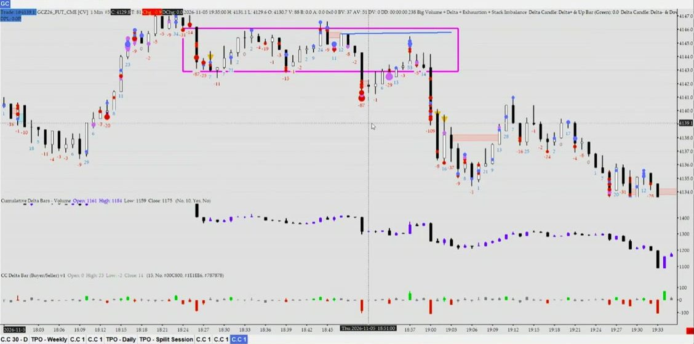
1.2Trong range đánh 2 cạnh, đã phá thì follow
Trong range → chỉ đánh 2 cạnh. Đã phá, giữ 1–2 nến → chỉ follow hướng phá.
Trong range, limit đứng chờ ở hai cạnh chặn giá, nên chỉ vào ở cạnh và nhắm cạnh đối diện. Giữa lòng range không có chỗ đặt SL hợp lý và không đủ khoảng để có 2R, nên không vào, dù tín hiệu đẹp.
Khi đã phá thật (1–2 nến sau vẫn đóng ngoài cạnh), thị trường đang đi tìm vùng giá mới: chỉ đánh theo hướng phá, không bắt đảo chiều. Cạnh vừa bị phá trở thành mốc để giá hồi về thử lại.
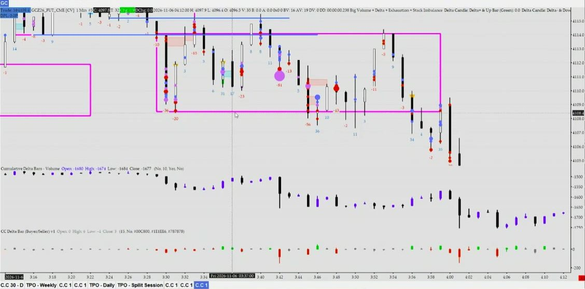
1.3Cấu trúc gần nhất còn giữ
Cấu trúc gần nhất chưa gãy ngược hướng đánh.
Xu hướng tăng còn giữ khi chưa có nến đóng dưới đáy gần nhất; xu hướng giảm thì ngược lại. Chỉ cần một nến đóng qua là gãy, không cần chờ nhiều nến. Nến chọc qua mà rút râu về lại thì chưa tính.
Cấu trúc gãy ngược hướng mình định đánh thì bỏ lệnh. Một nhịp hồi nhỏ ngược chiều chỉ gãy cấu trúc nhỏ; cấu trúc lớn chỉ đổi khi giá đóng qua đỉnh/đáy của cả sóng lớn.
Ngoại lệ fail break: nến đóng ra ngoài rồi 1–2 nến sau quay lại vào trong thì không tính là gãy. Đó là cú phá thất bại, chính là chỗ tìm lệnh ngược lại (ví dụ 1 và 3).
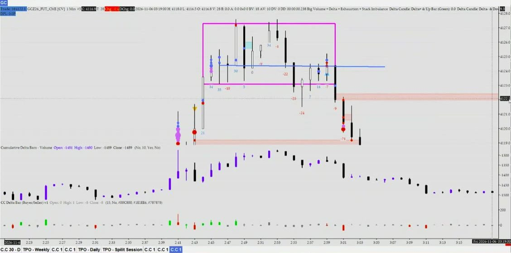
② Mốc — không đuổi giá
Mốc là chỗ mình chờ giá đi tới. Chưa tới mốc thì chưa xét gì cả.
2.1Giá ở mốc gần
Giá ở mốc gần: cạnh range / cạnh vừa phá / stacked mới / đỉnh-đáy vừa gãy. Mốc xa → bỏ.
Không đuổi theo nến đang chạy. Chờ giá hồi về mốc rồi mới xét vào lệnh. Mốc càng mới, càng gần thì lệnh của phe vừa đẩy càng có khả năng còn nằm ở đó để giữ giá.
Mốc ở xa, hoặc đã bị giá chạm nhiều lần, thì bỏ: lệnh ở đó đã khớp hết.
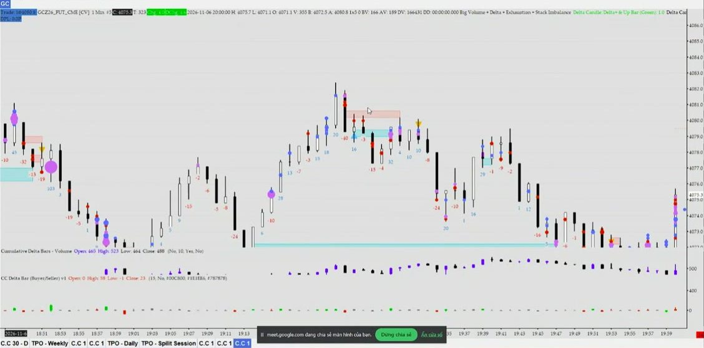
2.2Nhịp test không quá sâu
Test không quá sâu: chưa xuyên stacked, chưa đóng ngược qua cạnh. Fail break: đã đóng lại trong range (hoặc xác nhận lần 2).
Khi giá hồi về mốc, phe vừa đẩy phải giữ được mốc. Nhịp hồi xuyên qua vùng stacked, hoặc có nến đóng ngược lại qua cạnh vừa phá, thì mốc đã hỏng: bỏ ý định follow.
Đánh fail break thì ngược lại: phải chờ nến đóng trở lại trong range mới chứng tỏ cú phá thất bại. Ngoại lệ “xác nhận lần 2”: giá chọc ra ngoài thêm một lần nữa và lần này có thêm dấu hiệu thì vào được dù chưa vào lòng range, xem ví dụ 3.
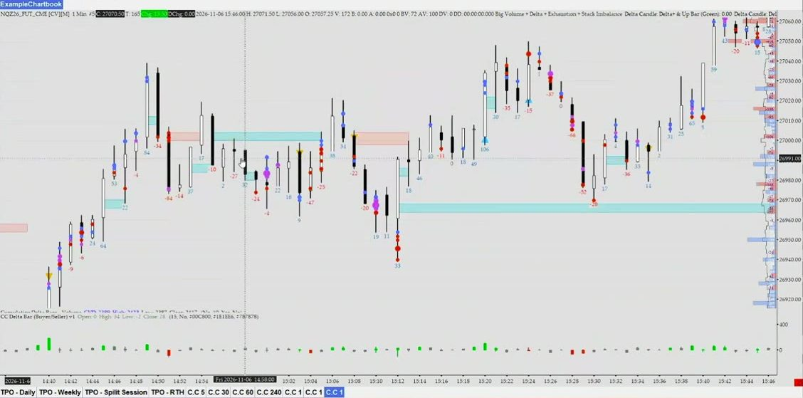
③ Xác nhận tại mốc — cần ≥ 2
Dấu hiệu xác nhận là cái xuất hiện ngay lúc giá đang ở mốc. Cần ít nhất 2 trong 5 dấu hiệu dưới, cùng phe. Cách đếm:
- Stacked imbalance cũ dùng làm mốc thì không tính là dấu hiệu. Chỉ stacked mới hình thành ngay trong nhịp test mới tính.
- Trap và kiệt sức có thể nằm trên cùng một nến nhưng tính là hai: trap là nhìn giá (râu quét rồi quay lại), kiệt sức là nhìn số Ask/Bid ở râu.
3.1Delta ủng hộ hướng đánh
Delta ủng hộ hướng đánh: to, thẳng, cùng chiều lệnh, hoặc giá và delta vừa đi ngược nhau. Nhỏ, lình xình → không.
Delta tính là một dấu hiệu khi có một trong hai dạng:
- Đồng thuận: delta to và thẳng, cùng chiều lệnh mình định vào (buy: delta dương; sell: delta âm), nhiều nến liền cùng dấu. Lệnh market đang thật sự đẩy được giá.
- Ngược giá: nhịp vừa rồi giá đi một hướng mà delta đi hướng kia, ví dụ giá hồi lên mà delta vẫn âm. Nhịp đó yếu, lực bị hấp thụ, nên ủng hộ đánh ngược lại nhịp đó.
Delta nhỏ, lúc âm lúc dương (lình xình) thì không tính. Và thấy delta âm lớn chưa phải là sell ngay: phải xem giá có xuống theo không.
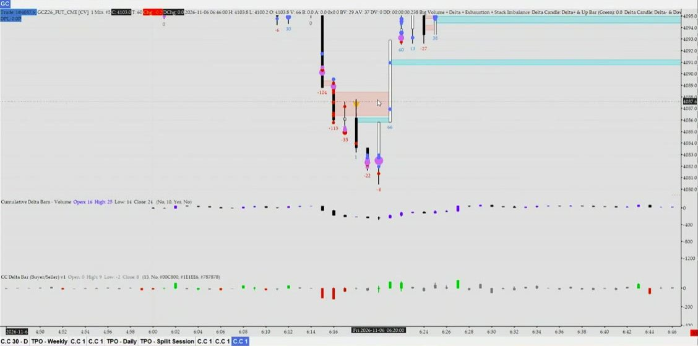
3.2Bóng đúng phe tại mốc
Bóng đúng phe nổ tại mốc (xanh ở đáy hồi → buy; đỏ ở đỉnh hồi → sell).
Bóng xanh không phải lúc nào cũng là người muốn buy. Người đang giữ lệnh sell muốn thoát (cắt lỗ hoặc chốt lời) cũng phải buy lại, nên lệnh thoát của họ cũng hiện thành bóng xanh. Vì vậy bóng chỉ có nghĩa khi xét vị trí.
Bóng xanh ở đáy nhịp hồi sau khi đã phá lên: nhiều khả năng là buy thật. Bóng xanh ngay trên cạnh trên range: thường là SL của phe sell bị quét, chưa phải xác nhận phá. Bóng tốt nằm ở phần nến phía mình đẩy (buy: nửa dưới nến) và nến đóng đẹp.
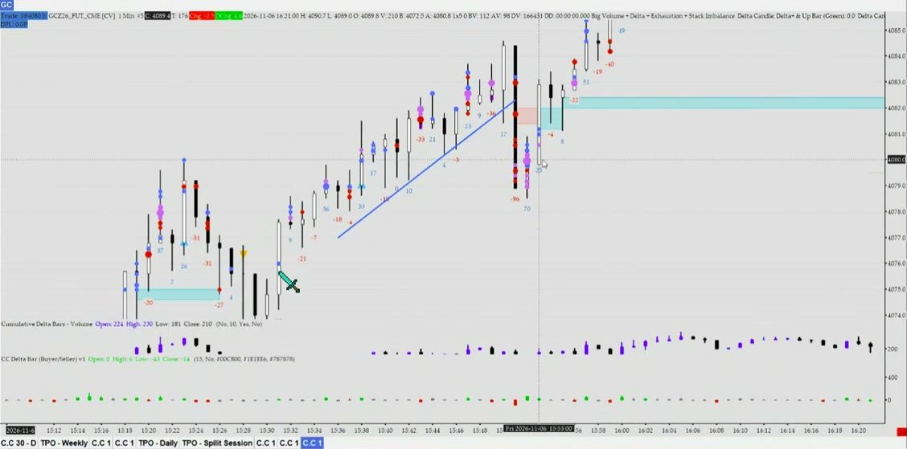
3.3Phe ngược kiệt sức
Phe ngược kiệt sức ở râu (đáy Bid ≈ 0 → buy; đỉnh Ask ≈ 0 → sell), chưa bị quét qua.
Đỉnh xem Ask, đáy xem Bid, lấy số ở râu. Trên footprint, râu là các mức giá nằm ngoài thân nến. Số ở mức cao nhất (hoặc thấp nhất) nhỏ hẳn so với các mức khác, hoặc giảm dần về 0 khi đi ra đầu râu, là kiệt sức. Đỉnh kiệt sức buy ủng hộ sell; đáy kiệt sức sell ủng hộ buy.
Kiệt sức hết hiệu lực khi có nến sau quét râu qua đúng mức đó, không cần đóng nến. Trên Order Flow Bubbles: tam giác vàng ở đỉnh = kiệt sức buy, tam giác xanh ở đáy = kiệt sức sell. Ảnh buổi học chỉ có tam giác, không hiện số; muốn thấy số Ask/Bid thì mở footprint trên Optimus Flow.
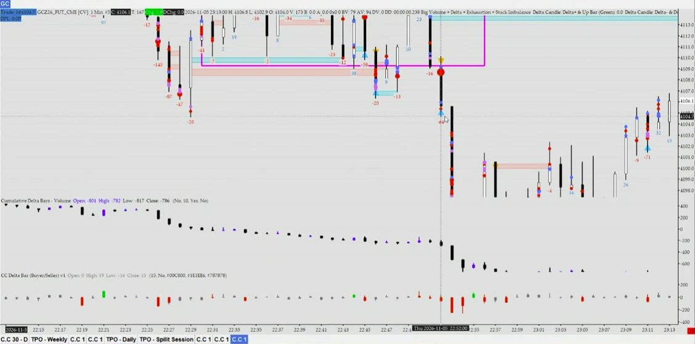
Râu nến dùng 3 kiểu, đừng lẫn: phá range / gãy cấu trúc cần nến đóng; làm mất kiệt sức chỉ cần râu quét qua; đo kiệt sức thì lấy số ở râu.
3.4Stacked imbalance mới cùng hướng
Stacked imbalance mới cùng hướng, nằm giữa thân nến.
Mỗi mức giá trên footprint có hai cột Bid và Ask. Imbalance buy là khi Ask ở một mức gấp ít nhất 2,5 lần Bid ở mức ngay dưới nó (sell thì ngược lại). Từ 3 mức liên tiếp cùng phe áp đảo trở lên là stacked imbalance. Indicator tự tính và vẽ thành dải màu, không cần tự đếm.
Tốt khi nằm giữa thân nến và giá đi tiếp sau đó: lực đẩy là thật. Nằm sát râu rồi giá rút ngược lại thì lực đã bị chặn: bỏ. Để tính là dấu hiệu xác nhận, nó phải mới hình thành ngay trong nhịp test ở mốc. Ảnh: vùng đỏ ở mục 2.1.
3.5Trap / stop hunt phe ngược
Trap / stop hunt phe ngược vừa xảy ra rồi đẩy ngược.
Người sell trong range hay đặt SL ngay trên cạnh trên. Khi giá chạm, các SL này tự khớp thành lệnh buy market, nổ bóng xanh. Nếu sau đó giá quay ngay vào trong, đó là bẫy: phe kia đã gom được lệnh và đẩy giá đi hướng ngược lại. Phía dưới đáy thì ngược lại.
Chỉ tính ở chỗ dễ có nhiều SL (cạnh range, đỉnh/đáy quan trọng). Chờ giá quay về và nến đóng rồi mới dùng.
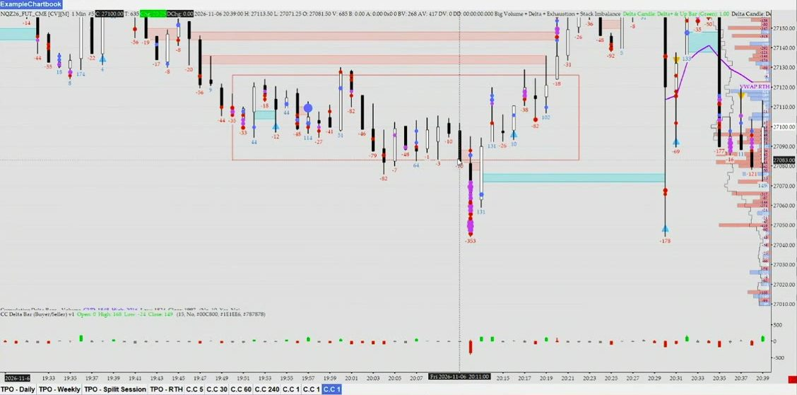
④ Vào lệnh
4.1Nến xác nhận đã đóng
Nến xác nhận đã đóng: thân đủ, đóng sát cực trị, không rút râu. Sau fail break chờ 1–2 nến.
Chỉ vào khi nến tín hiệu đã đóng. Nến tốt có thân đủ dài, đóng sát đỉnh nến (buy) hoặc sát đáy nến (sell), không có râu dài ngược lại. Râu dài ngược lại nghĩa là phe kia đã kéo giá về: xác nhận yếu.
Sau fail break, đừng vào ngay ở nến đầu tiên quay lại; cẩn thận thì chờ thêm 1–2 nến vẫn đóng trong range. Ngoại lệ là xác nhận lần 2 (ví dụ 3).
4.2SL sau mốc quan trọng gần nhất
SL sau mốc quan trọng gần nhất, không đặt sát.
Đặt SL dưới đáy vừa bị quét (buy) hoặc trên đỉnh yếu, tức đỉnh vừa chọc lên rồi bị đẩy xuống (sell). Đặt sát giá vào thì dễ bị râu quét dù đánh đúng hướng.
Nếu mốc đó xa tới mức không còn 1,7R thì bỏ lệnh, không kéo SL lại gần cho đủ R.
4.3Đủ 2R tới mục tiêu
Tới mục tiêu ≥ 2R (1,7R chấp nhận), TP 2R. Không đủ → không chơi.
Mục tiêu là cạnh đối diện của range hoặc mốc kế tiếp. Khoảng tới mục tiêu phải gấp ít nhất 2 lần khoảng tới SL. Dưới 1,7R (kể cả 1,5R) thì không vào, dù tín hiệu đẹp.
Nếu mục tiêu chỉ cách 1,7R thì vẫn vào, nhưng đặt TP ở 2R, tức hơi vượt qua cạnh. Lý do CORVEN đưa ra: nhiều lúc giá quét qua cạnh rồi chạy luôn. Không phải lúc nào cũng vậy: ở ví dụ 1 giá chỉ về sát cạnh rồi quay đầu.
4.4Trong ngày, không nhồi
Trong ngày, không nhồi.
Lệnh theo tín hiệu M1 chỉ sống trong phiên, không giữ qua đêm. Không nhồi (vào thêm lệnh) khi giá đi đúng hướng: giá vốn xấu đi, một cú quét có thể lấy cả lãi lẫn vốn. Vào một lần, đủ khối lượng.
⛔Không vào khi
- Delta nhỏ, không có bóng (“buy không vào”): phe đẩy chưa thật sự vào.
- Kiệt sức đang chống lại hướng mình đánh, ví dụ muốn sell mà đáy vừa kiệt sức sell: chờ râu quét qua mức đó đã.
- Giá còn ngoài range và mới có 1 dấu hiệu.
- Nhịp đẩy do quét stop: chạy rất mạnh nhưng chỉ là lệnh cắt lỗ khớp hàng loạt, hết là hết, không đi xa.
- Range chồng range, giá đi lộn xộn, không rõ cạnh.
- Đấu giá vừa xong (TPO profile nhọn, đều 2 cạnh: hai phe đã cân bằng, chưa có hướng): đứng ngoài, chờ break.
Ba ví dụ
Giá và giờ đọc trên ảnh là xấp xỉ.
Ví dụ 1 — Thế A: fail break đỉnh range → sell
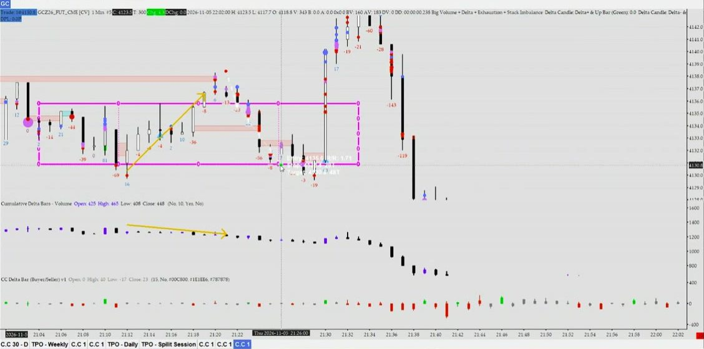
- Bối cảnh: giá trong range → thế A, chỉ đánh cạnh.
- Mốc: cạnh trên. Giá chọc qua rồi đóng lại trong range (fail break), không phải gãy cấu trúc.
- Xác nhận: giá lên mà delta đi xuống (delta ngược giá, mục 3.1) + bóng đỏ ở đỉnh vừa chọc (mục 3.2) = 2 dấu hiệu sell.
- Lệnh: vào ≈ cạnh trên, SL trên đỉnh chọc ≈ 4138, mục tiêu cạnh dưới: R/R ≈ 1,7 → chấp nhận, TP đặt 2R.
- Kết quả trên ảnh: giá về ≈ 4129,5 lúc ≈ 21:27, sát mục tiêu 1,7R nhưng chưa tới TP 2R. Lúc ≈ 21:30 nến vọt lên ≈ 4142, quét SL, rồi giá mới sập về ≈ 4128. Setup đúng vẫn có thể thua; đó là lý do phải đòi R đủ lớn.
Ví dụ 2 — Thế B: phá range → hồi về cạnh vừa phá → sell
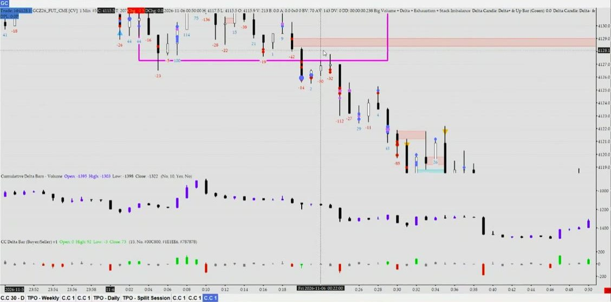
- Bối cảnh: nến đóng dưới cạnh dưới và các nến sau không đóng lại vào trong → phá thật, thế B, chỉ tìm sell.
- Mốc: cạnh vừa phá ≈ 4127,4, ngay dưới vùng đỏ. Vùng đỏ tạo lúc phá, là mốc, không tính là dấu hiệu. Test không quá sâu: không nến nào đóng lại hẳn vào trong range.
- Xác nhận: giá hồi lên mà delta âm (delta ngược giá) + bóng đỏ nổ ở đỉnh nhịp hồi = 2 dấu hiệu sell.
- Lệnh: vào khi nến ≈ 00:23 đóng (≈ 4126,6), SL trên vùng đỏ ≈ 4129 (≈ 2,4 điểm), TP 2R ≈ 4121,8. Giá về ≈ 4119: chạm TP. Vào ở nhịp hồi, không đuổi theo nến sập phía sau.
Ví dụ 3 — Thế A: lần 1 chưa vào; xác nhận lần 2 → buy
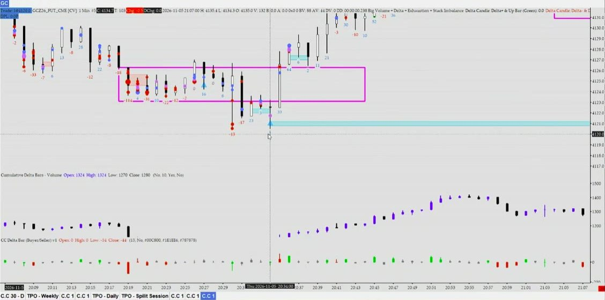
- Bối cảnh: giá trong range → đánh cạnh dưới, hướng buy.
- Lần 1 (≈ 20:30): giá chọc xuống rồi vẫn đóng ngoài range, mới có một dấu hiệu → không vào.
- Lần 2 (≈ 20:34): râu quét đáy thêm lần nữa rồi quay lên (trap) + tam giác xanh kiệt sức sell (indicator báo Bid ở râu đáy rất nhỏ) = 2 dấu hiệu → vào được, dù giá chưa vào lòng range.
- Lệnh: vào khi nến ≈ 20:34 đóng (≈ 4122,7), SL dưới đáy vừa quét ≈ 4120 (≈ 2,7 điểm). Tới cạnh trên chỉ ≈ 1,3R, chưa đủ, nên mục tiêu phải là vùng giá cũ ≈ 4128,5–4129 (≈ 2,2R). Giá lên ≈ 4131: chạm TP.
Tóm từ buổi học Meet với CORVEN ngày 07/11/2026 và tin nhắn của CORVEN. Đây là lời giảng, chưa phải luật đã kiểm chứng bằng số.